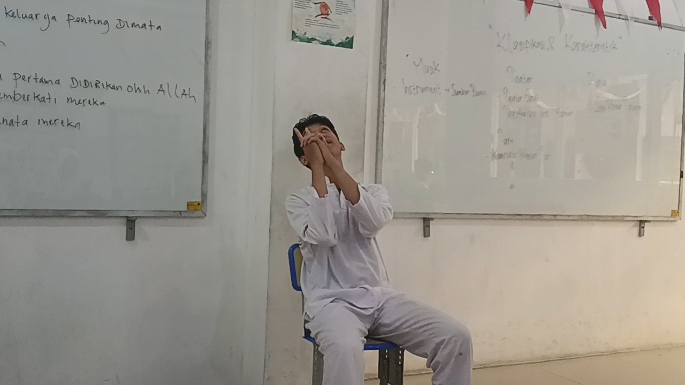

Monolog
"Arrivederci! Klik foto dokumentasi di bawah untuk melihat detail lebih dekat."
📸 DOKUMENTASI 01 • HASIL KARYA
STICKY FINGERS!

🤐 Penjelasan Karya & Kegiatan
Memainkan salah satu adegan singkat dengan berperan sebagai "Firdaus" dari monolog "Perempuan di titik nol". Menampilkannya didepan kelas tanpa naskah dan dengan properti sederhana.
📌 Catatan Tambahan: Praktek pertama & pembuka dikelas 12
🎬 DOKUMENTASI VIDEO • LIVE REPLAY
MOODY BLUES!